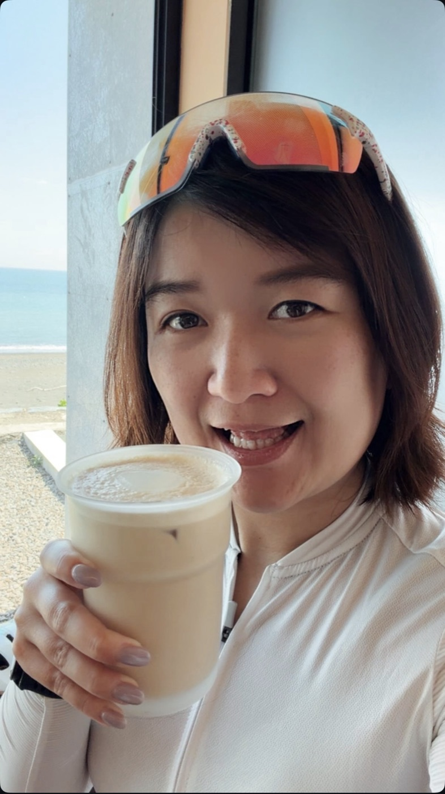

🏃♀️
愛運動、重視健康的你
跑步、登山、重訓、騎車，難免有小傷小痛。先把醫療這塊顧好，就能放心繼續動 👍

我是一位保險顧問，也是一個對生活充滿熱情的人。平常在玩三鐵，游泳、騎車、跑步都來；放假喜歡去旅行，偶爾也會找間咖啡廳，什麼都不做，就發呆一下午 ☕
很多人一聽到保險就覺得複雜、有壓力。所以我習慣先聽你聊聊現在的生活，再用日常的話把保障範圍和限制講清楚。哪些適合你、哪些其實不需要，我都會老實跟你說。
跑步、登山、重訓、騎車，難免有小傷小痛。先把醫療這塊顧好，就能放心繼續動 👍
單身或沒有小孩，想維持現在喜歡的生活，也開始想像退休的樣子。我們一起把它規劃得自由、不焦慮。
保障範圍和限制都講清楚，不誇大，也不隱瞞。
先理解你的處境和在意的事，再一起討論適合的安排。
用運動、旅行、咖啡和退休日常來說明，不丟條款術語給你。